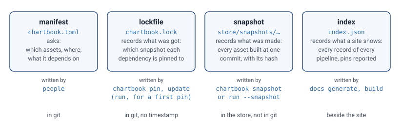
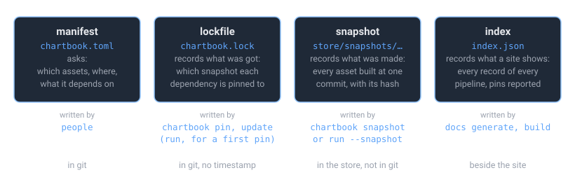

ChartBook#
Turn a data pipeline into a documented, searchable site, and let other pipelines build on what it made.
A pipeline is a folder of code in git: a manifest, scripts, write-ups, and the data, charts and models the scripts produce. ChartBook reads that folder, records what is in it, and writes a site. Many pipelines make a catalog: one site over all of them, where any dataset can be loaded by name, and where one pipeline can pin exactly what another one built.


Three steps, each a transformation of the one before. The index in the middle is the point of the design: one JSON file that says what the site shows, with an ID and a content hash for everything, so that pages can be written for any site tool, two builds can be compared, and another program can read what you published without scraping it. Vocabulary defines these words, and every page here uses them in those senses.
Start#
pip install chartbook, scaffold a project with chartbook init, and have a site in a minute.
Describe charts, dataframes, notebooks, notes and models in chartbook.toml; each gets a page.
Snapshots, pins and the lockfile: read exactly what another pipeline built, and nothing else.
The four documents#
Four files, one record format, and none is another in disguise. A manifest asks, a lockfile records what was got, a snapshot records what was made, and an index records what a site shows.


From zero to a documented pipeline#
pip install chartbook
chartbook init # scaffold a pipeline project
cd <your-project>
chartbook docs generate # write the site, and index.json beside it
chartbook docs open # open it
from chartbook import data
df = data.load(pipeline="fred_charts", dataframe="fred", format="pandas") # any cataloged dataset
rates = data.load("fed_yield_curve:treasury_rates") # a dependency's dataframe: the pinned copy, by name
Where things are#
Getting Started: install, scaffold, first build
Vocabulary: the words, defined once
Documenting a Pipeline: the manifest and the pages it makes
Depending on Another Pipeline: snapshots, pins, the lockfile
Keeping Costly Outputs:
keep = true,chartbook restore, and the stop before a build remakes itCatalogs and Data Access: one site over many pipelines;
data.load()Plotting: one call, five chart files
How the Build Works: the index, the writer, Sphinx
Configuration Guide: every
chartbook.tomlfieldCLI Reference: every command
API Reference: the Python modules
Stability: what “experimental” means here
Design: start here: the design, decision by decision
Working with an AI assistant? The built site ships llms.txt files at its
root, and chartbook install claude-skill installs a ChartBook skill for Claude Code, which says when it is for another ChartBook.